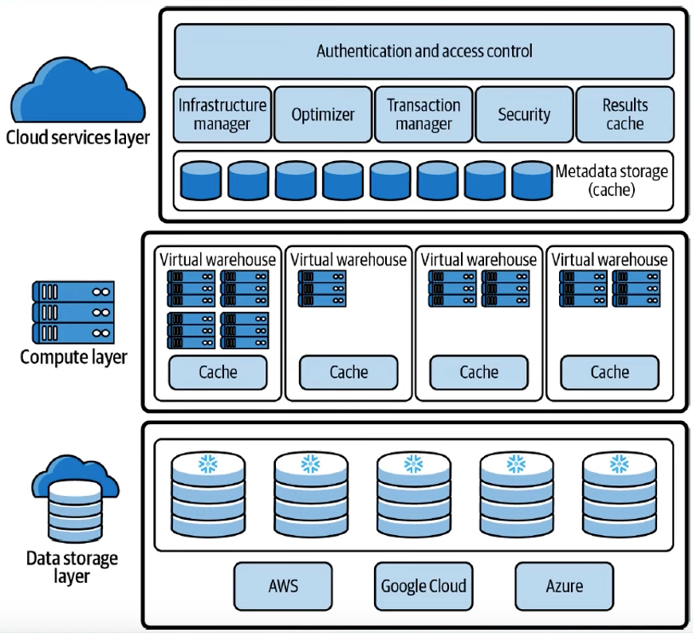

/
On this page
Snowflake - SnowPro Core
Note: Exam not even attended.
Snowflake Key Concepts & Architecture
Snowflake’s Data Cloud is built on an advanced data platform delivered as a self-managed service, offering faster, easier, and more flexible solutions for data storage, processing, and analytics than traditional systems.
Unlike legacy database technologies or Hadoop-based platforms, Snowflake is built from the ground up with:
- A new SQL query engine
- A cloud-native architecture
Data Platform as a Self-managed Service
Snowflake is a true self-managed service, meaning:
- No hardware (virtual or physical) to install or manage
- Minimal software to configure
- Automatic maintenance, upgrades, and tuning by Snowflake
It runs entirely on public cloud infrastructure, so it cannot run on private clouds or on-premises. It’s not a packaged software product — Snowflake manages installation and updates. It uses virtual compute instances for processing and cloud storage services for persistent storage.
Architecture
Snowflake’s architecture is a hybrid of more traditional:
- Shared-disk database architectures; uses a central data repository for persisted data that is accessible from all compute nodes in the platform (benefit: data management simplicity)
- Shared-nothing database architecture; processes queries using MPP (massively parallel processing) compute clusters where each node in the cluster stores a portion of the entire data set locally (benefit: performance and scale-out)

Snowflake’s unique architecture consists of three key layers:
Database Storage
- Data is stored in cloud storages managed entirely by Snowflake (e.g. S3)
- Data is reorganized into an optimized, compressed, columnar format
- Snowflake handles file size, structure, compression, metadata, and statistics
- Data is not directly accessible; it is only queried via SQL operations
Query Processing
- Queries are executed by virtual warehouses (independent MPP compute clusters)
- Each virtual warehouse:
- Uses multiple compute nodes provisioned from the cloud
- Operates independently, ensuring no performance interference across clusters
Cloud Services
- Coordinates all platform activities (from login to query execution)
- Runs on compute instances provisioned by Snowflake
- Key services include:
- Authentication
- Infrastructure management
- Metadata management
- Query parsing & optimization
- Access control
Connecting to Snowflake
Snowflake supports multiple ways of connecting to the service:
- A web-based user interface from which all aspects of managing and using Snowflake can be accessed
- Command line clients (e.g. SnowSQL) which can also access all aspects of managing and using Snowflake
- ODBC and JDBC drivers that can be used by other applications (e.g. Tableau) to connect to Snowflake
- Native connectors (e.g. Python, Spark) that can be used to develop applications for connecting to Snowflake
- Third-party connectors that can be used to connect applications such as ETL tools (e.g. Informatica) and BI tools (e.g. ThoughtSpot) to Snowflake
Snowflake Editions
Snowflake offers different editions with varying features:
- Standard Edition: Basic features for most use cases
- Enterprise Edition: Advanced features for large organizations
- Business Critical Edition: Highest level of security and compliance
- Virtual Private Snowflake (VPS): Isolated deployment for maximum security
Access Control
Snowflake provides comprehensive security features:
- Role-Based Access Control (RBAC): Fine-grained permissions
- Network Policies: IP whitelisting and network restrictions
- Data Encryption: End-to-end encryption for data at rest and in transit
- Multi-Factor Authentication (MFA): Enhanced login security
Tables
Snowflake supports various table types:
- Permanent Tables: Standard tables for persistent data storage
- Temporary Tables: Session-specific tables that are automatically dropped
- Transient Tables: Tables that persist but have no fail-safe protection
- External Tables: Tables that reference data stored outside Snowflake
Views
Views in Snowflake provide virtual tables based on SQL queries:
- Standard Views: Read-only virtual tables
- Materialized Views: Pre-computed and stored for performance
- Secure Views: Views with additional access restrictions
Courses
Sample Questions
- ExamTopics (free, reliable, but always check the discussion)
- SkillCertPro (costs around €20)